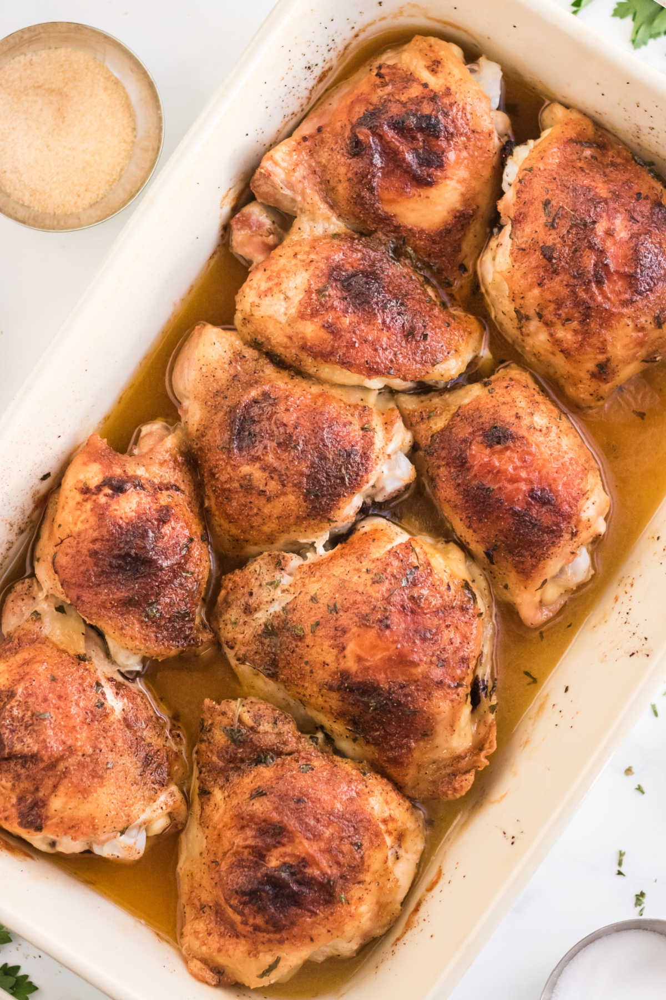

Baked Chicken Thighs

Chicken thighs are a cheap and easy-to-cook protein that pairs well with many other dishes.
Ingredients:
- 3 lbs of bone-in, skin-on chicken thighs
- 4 tbsp Salt
- 1 tbsp Black Pepper
- 1 tbsp Paprika
- 1 tbsp Garlic Powder
- 1/2 tbsp Chili Powder (or Cayenne)
Steps
- Preheat oven to 400 degrees F.
- Combine spices in a small bowl
- Remove Chicken thighs from packaging and place into a large mixing bowl.
- Place the bowl into your sink and rinse the chicken. Pat dry with paper towels.
- Divide the seasoning between each thigh. Use your hands to rub the seasoning into each piece.
- Place the chicken thighs onto a flat pan or casserole dish.
- Bake for 45 minutes. Cut into a thigh to confirm that they are cooked through. You can set the oven to
broil for 3 minutes before removing to brown the skin if desired.
Return to Homepage